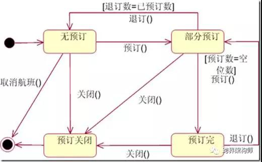

一、背景
大家应该在从事软件开发领域工作时间有一段时间之后，就开始有画图的意识，不管是懵懂的学别人还是想更好的让其它人理解自己的一个观点。所谓“一图胜千言”，我们身处于软件开发这个水很深且要求精确的复杂领域里，要想把事情做好，最基本的是要把事情想明白，其次还要让相关的人能够明白你要说的东西，进行协作。
特别对于一位架构师来说，能否画得一手好图尤其重要，因为相关的干系人数较多，要让不同领域的人能够达成一个统一的认识，是一件不太容易但也是必须要做好的事情。
二、图为了解决什么问题
软件开发涉及的流程是：需求 –> 开发 –> 测试 –> 发布上线。作图本身是个设计的工作，是个前期工作。那么从软件开发的整个生命周期来说，用到的图的地方是在前期的需求、开发阶段较多。在软件开发这个非常抽象的领域，只要涉及到多人协作，那么通过文字来进行交流叙述是非常晦涩难懂的，需要沟通好几遍才能理解达成一致也是比较常见的情况。那么我们画图，就是为了把不适合用言语表述的内容通过作图的方式呈现出来，让相关协作者有一个共同的具象的参照物。这个参照物可以有它的额外价值，是对软件长期价值的延伸，一份一致、清晰的设计图，可以给后续的软件迭代提供非常有帮助的决策依据。当然保证设计图与系统的一致本身也是件费精力的事情。
三、不同流程中适合运用的图
1.用例图
用例图是UML交互图中的一种，是指由参与者（Actor）、用例（Use Case），边界以及它们之间的关系构成的用于描述系统功能的视图。用例图（User Case）是外部用户（被称为参与者，一般为软件的面向用户）所能观察到的系统功能的模型图。
适用场景：当新做一个产品或者功能的时候，首先需要明确核心方向，用例图就是整理这个核心方向的工具。它用来说明的是谁要使用系统，以及他们使用该系统可以做些什么。可以理解为是MVP思想的写照，去除画龙点睛的功能，这些就是基础、核心。
缺点：仅仅描述的是提供什么功能，不能表达非功能需求，如可靠性、性能等非功能需求。
2.鲁棒图（Robustness Diagram）
可能英文名Robustness Diagram更为常见一些，用于衔接用例图之后的设计，识别出系统在用例图中的各种职责，对后续的细节设计提供基础。算是对用例图的一种延伸。
适用场景：在确立用户场景之后，如果需要将关键功能设计出来，那么就需要它了。作图过程中最关键的2个点，发现职责，和梳理各个职责之间的关系。
缺点：和用例图是一样缺点，唯一的变化是，其有了粗粒度的实现层面的内容。
3.思维导图
思维导图是一个很厉害的发明，他将我们的思考过程具象化了，完美展示了由点到面不断发散的过程。但是它最大的价值，反而不是最终呈现出来的这个图，而是促进了思考的过程。并且需要注意的是，一定要把一条分支走到尽头，再回过头来走其它的分支，把思想榨干。
适用场景：在一个事情刚开始的萌芽期，不知如何下手；或者陷入一个困境的时候。利用思维导图来活跃大脑，进行发散思维。这时候如果结合头脑风暴，效果更佳。
缺点：它是一种树状的信息分层可视化展视，结构比较固定，不适合分支间互相交互比较复杂的信息展示。
4.DFD（Data Flow Diagram）图
DFD图是从数据传递和加工角度，以图形方式来表达系统的逻辑功能、数据在系统内部的逻辑流向和逻辑变换过程，是结构化系统分析方法的主要表达工具及用于表示软件模型的一种图示方法。
适用场景：在将思维导图得出的东西进行整合、梳理形成一个粗粒度的流程。这个其实类似与DDD中的上下文映射图，是在需求分析过程中做宏观设计的一种方式。
缺点：反映系统“做什么”，不反映“如何做”，粒度算是中等，需要其它更细粒度的图来对细节做支撑。
5.流程图
上面贴了2张图都是流程图，流程图有时也称作输入-输出图。该图直观地描述一个工作过程的具体步骤，各种操作一目了然，不会产生“歧义性”，便于理解，算法出错时容易发现。流程图对准确了解事情是如何进行的，以及决定应如何改进过程极有帮助。大到系统级别、小到某个操作背后的运转逻辑都可以使用流程图来画，我个人认为这应该是被最多人认识的图，没有之一。
适用场景：正如上面所说这个适用场景比较广，日常工作中小到算法逻辑，大到战略层面的执行落地都需要它。主要用它来将背后的流程可视化，辅助做决策去（如改进等）。
缺点：所占篇幅较大，由于允许使用流程线，过于灵活，不受约束，使用者可使流程任意转向，从而造成程序阅读和修改上的困难，不利于结构化程序的设计。
6.UML类图
UML类图是UML交互图中的一种，也是我们较常见的一种。类图是描述系统中的类，以及各个类之间的关系的静态视图。它不但是设计人员关心的核心，更是实现人员关注的核心。
适用场景：一般作为编码前做的最后一步，将设计转为相应的模型。也可以使用Code First的方式直接在项目中建模，现在的VS也支持直接从代码中生成UML类图。
缺点：缺点就是画起来太费时间了，但反过来其表达的粒度更细致，是代码实现级别的内容。由于现在有比较多的工具可以从代码生成UML类图，甚至在大部分提倡使用Code First的场景下，我们画UML类图的机会是越来越少了。
7.状态图

状态图是对类图的补充。描述类的对象所有可能的状态，以及事件发生时状态的转移条件。可以捕获对象、子系统和系统的生命周期。他们可以告知一个对象可以拥有的状态，并且事件(如消息的接收、时间的流逝、错误、条件变为真等)会怎么随着时间的推移来影响这些状态。一个状态图应该连接到所有具有清晰的可标识状态和复杂行为的类；该图可以确定类的行为，以及该行为如何根据当前的状态变化，也可以展示哪些事件将会改变类的对象的状态。
适用场景：当有一个对象拥有多个状态的时候，想要表达清楚状态之间的演变关系（也就是这个对象的生命周期）。比如通过什么条件触发状态变动的，到达某个状态之后会做什么动作等。这也是基于事件驱动设计的良好可视化图。
缺点：仅能表达行为/事件与状态之间的演变关系，不适用于其它领域。
8.E-R图
E-R图提供了表示实体型(Entity)、属性(Attribute)和联系(Relationship)的方法。其中最核心的还属联系(Relationship)的表示。
适用场景：虽然在UML类图中，也可以体现出聚合、依赖等关系。但是如果相关联的模型数量巨大的话，你会发现看起来特别费劲，要缩的很小才能看清全貌。这时候你需要E-R图出场了。
缺点：相对类图来说，E-R图无法定义类/实体的行为。它更面向数据库而不是代码。
9.UML时序图
时序图也是UML交互图中的一种，是描述对象是如何交互的，并且将重点放在消息序列上。也就是说，描述消息是如何在对象间发送和接收的。时序图有两个坐标轴：纵坐标轴显示时间，横坐标轴显示对象。
适用场景：一般当我们想反映一个包含顺序的交互流程，比如http请求的生命周期、页面上某个按钮背后流转细节等情况时，就需要它了。
缺点：一个时序图仅能面向一个Case，同时画起来比较费时间。
四、实际的运用
其实上一节中图的顺序就是按照由层次从高到底，粒度从粗到细规划的。我们可以用用例图来确定用户核心需求，再用Robustness Diagram定义好关键功能，随后在关键功能的实现上通过思维导图进行发散，然后用DFD图把粗粒度的内容串起来，至此大体的设计工作算是完成了。
然后再通过流程图、UML类图、状态图、E-R图、时序图在不同的场景确定细节实现。最终就是Coding的事情了。
至于每个图绘画的规范网上资料比较多，这里就不赘述了。如果大家有什么疑问继续交流。
五、结语
其实最好的图是手稿，不但画起来快，还能让你的思维专注到构思上，用什么颜色之类的问题不会对你产生干扰。另外我们不要为了画图而画图，结合实际的情况把握好尺度，一般情况下，时间上不太会允许我们把图画的面面俱到，能覆盖到核心甚至80%就很好了。
本文摘自https://mp.weixin.qq.com/s/TRkj4OiPNMWH8x1Qi4fh_g